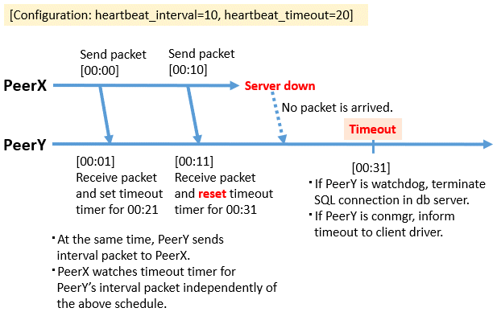
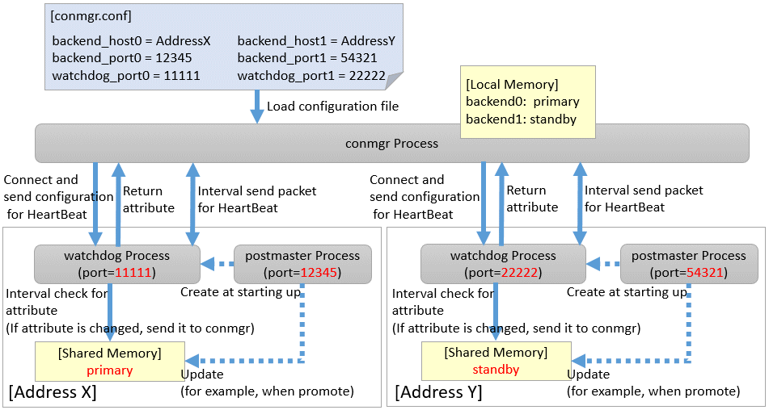

Place the configuration file conmgr.conf in the directory for the conmgr process.
Syntax for conmgr.conf
In conmgr.conf, after the symbol(#) are considered comments.
The parameter name = value" is a set of settings and must be written on one line.
Set the value in a format that matches the type of each parameter. The types and formats are:
integer: Numeric type. Express as a sequence of numbers in decimal number.
string: String type. You can also include spaces by enclosing them in quotation marks('). If you include quotation marks, escape them.
enum: Enumeration type. Possible values are determined.
Parameters to Set
Specify the port number on which the conmgr process listens for connections from the applications.
The value must be greater than or equal to 1 and less than or equal to 65535. The default is 27546. You must restart conmgr process for this parameter change to take effect.
Specify the host name or IP address of the instance.
You can also use IPv6 address. If you specify the IP address directly, you can save time by using backend_hostaddr parameter. If backend_host parameter and backend_hostaddr parameter are both specified, backend_hostaddr parameter is used. You must restart conmgr process for this parameter change to take effect.
To distinguish multiple instances, append a zero-based number immediately after the parameter name, such as backend_host0, backend_host1,... This number is called the instance number. A parameter identified by the same instance number configures the settings of a single instance. If you want to exclude some instances from your replication configuration, you can simply remove the settings for that instance.
Note
Refer to "System Configuration Notes" in "1.1.2 Mechanism of Heartbeat Monitoring Feature" for details.
For example, if two instances are listening on "host name:host0, port number:5432" and "host name:host1, port number:2345", write as follows.
backend_host0='host0'
backend_port0=5432
backend_host1='host1'
backend_port1=2345
You can also mix different instance number settings:
backend_host0='host0'
backend_host1='host1'
backend_port0=5432
backend_port1=2345
It does not matter if the instance number is missing as in the following (instance number 1):
backend_host0='host0'
backend_host2='host2'
backend_port0=5432
backend_port2=2345
If the host name is omitted even if the port is specified, as in the following instance number 1, it is regarded as a missisng number.
backend_host0='host0'
backend_host2='host2'
backend_port0=5432
backend_port1=5555
backend_port2=2345
Specify the port number the postmaster of the instance will listen on.
The value must be greater than or equal to 1 and less than or equal to 65535. The default is 27500. Append the instance number as you would for backend_host parameter. You must restart conmgr process for this parameter change to take effect.
Specify the port number on which the watchdog process listens.
The conmgr process connects to this port, but the user application does not. you must set it to the same value as watchdog.port parameter in postgresql.conf. The value must be greater than or equal to 1 and less than or equal to 65535. The default is 27545. Append the instance number as you would for backend_host parameter. You must restart conmgr process for this parameter change to take effect.
Specify the interval at which heartbeat packets are sent for heartbeat monitoring.
Used in conjunction with heartbeat_timeout parameter. Connection Manager heartbeat monitoring always continues to send packets periodically from both ends of the connection. If a packet is not received from the other side within a certain period of time, the link is considered down.
Note that this method is different from TCP keepalive. TCP keepalive send a keepalive packet only when there is a certain amount of inactivity (idle), and expects to receive an ACK for that packet. If TCP keepalive does not receive an ACK, it repeats this a specified number of times and then assumes that the link is down.
The heartbeat_interval parameter and heartbeat_timeout parameter are propagated from the conmgr process to the watchdog process, and also apply to the interval between the transmissions of heartbeat packets from the watchdog process. If a watchdog process is connected from both a conmgr process with a heartbeat_interval parameter of 3 seconds and a conmgr process with a heartbeat_interval of 5 seconds, it sends heartbeat packets every 3 seconds to the former process and every 5 seconds to the latter process. The unit is seconds. Specify a value equal to or more than 1 second. The default is 10 seconds. You must restart conmgr process for this parameter change to take effect.
If a heartbeat packet for heartbeat monitoring cannot be received for more than the time specified by this parameter, an error is assumed to have occurred and the application is notified of the error.
This parameter should be decide of heartbeat_interval parameter as the basis. No error is occured when the configuration file is loaded, but is always considered abnormal by heartbeat monitoring if it is at least not greater than heartbeat_interval parameter. The unit is seconds. Specify a value equal to or more than 1 second. The default is 20 seconds. You must restart conmgr process for this parameter change to take effect.
Refer to the following figure for the relationship between the heartbeat_interval parameter and heartbeat_timeout parameter settings and the heartbeat timeout.

Specify the interval between attempts to establish heartbeat monitoring again after detecting an abnormality.
This parameter is useful when only the database server is started, but not the instance. In such a situation, the TCP connection fails immediately, and retries cannot be attempted without an interval. If you specify an excessively long value, you may delay noticing the start of the instance. If a connection attempt fails for a long time, it will attempt the next connection after the time specified by heartbeat_connect_interval parameter has elapsed. The unit is seconds. Specify a value equal to or more than 1 second. The default is 1 second. You must restart conmgr for this parameter change to take effect.
Specify the connection timeout for establishing heartbeat monitoring.
The connection includes the time it takes to send the TCP connection and the first heartbeat packet to the watchdog process and receive a reply from the watchdog process. This parameter is particularly needed when the other server is down or the network is disconnected. This is because TCP connections are attempted over a long period of time, depending on the operating system configuration, and the connection takes a long time to fail. The unit is seconds. Specify a value equal to or more than 1 second. The default is 10 seconds. You must restart conmgr process for this parameter change to take effect.
Specify the destination of the message.
You can specify multiple destinations. Use commas to separate multiple entries and enclose all in single quotation marks. "stderr" and "syslog" can be specified. The default is to print only to stderr. You must restart conmgr process for this parameter change to take effect.
Specify the syslog facility.
Valid only if log_destination parameter includes "syslog". LOCAL0, LOCAL1, LOCAL2, LOCAL3, LOCAL4, LOCAL5, LOCAL6, or LOCAL7 can be specified.
The default is "LOCAL0". You must restart conmgr process for this parameter change to take effect.
Specify the program name used to identify the output from the conmgr process.
The default is "conmgr". You must restart conmgr process for this parameter change to take effect.
Specifies the level of messages to output.
It can be DEBUG, INFO, NOTICE, WARNING, ERROR, LOG, FATAL, or PANIC. Messages below the specified level are not output. The default is "WARNING". You must restart conmgr process for this parameter change to take effect.
Specifies the maximum number of simultaneous connections to the conmgr process.
If there are more than this maximum number of client connections, it forces the connection to be closed without sending an error message to the client.
The conmgr process also outputs this fact at level “LOG” to the destination specified by log_destination. Specify a value equal to or more than 0.
If 0 is specified, there is no limit. The default is 0. You must restart conmgr process for this parameter change to take effect.
Note
The maximum number of file descriptors that can be opened simultaneously (You can check it with -n of the ulimit command.) imposed on a conmgr process by the OS user limit should be greater than the value derived from the following equation:. Otherwise, the conmgr process will abort if the user limit is violated.
9 + Number of database instances specified in conmgr.conf x 2 + max_connections specified in conmgr.conf
Overview of connections definitions
The following figure shows the relationship between the IP address or host name and the port number set in conmgr.conf and the processes.
